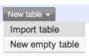
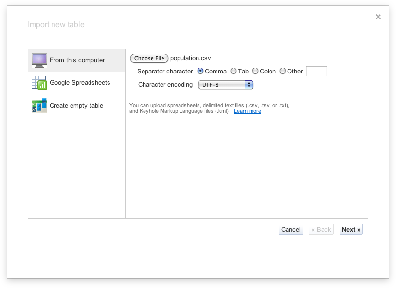
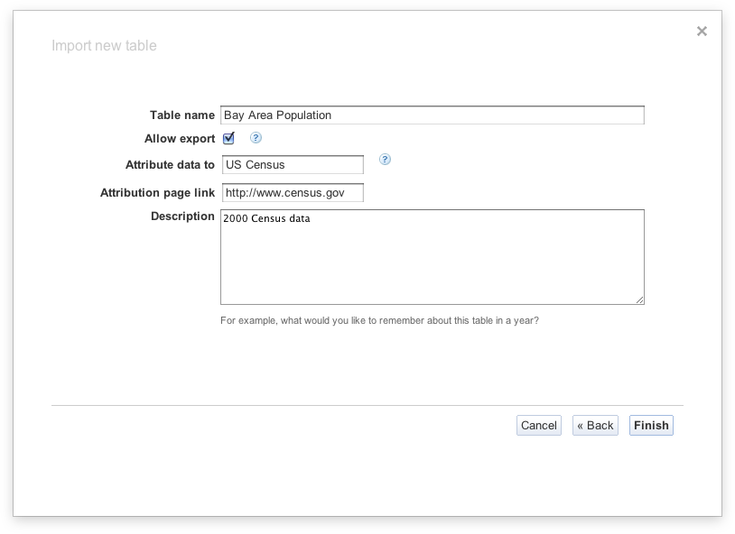
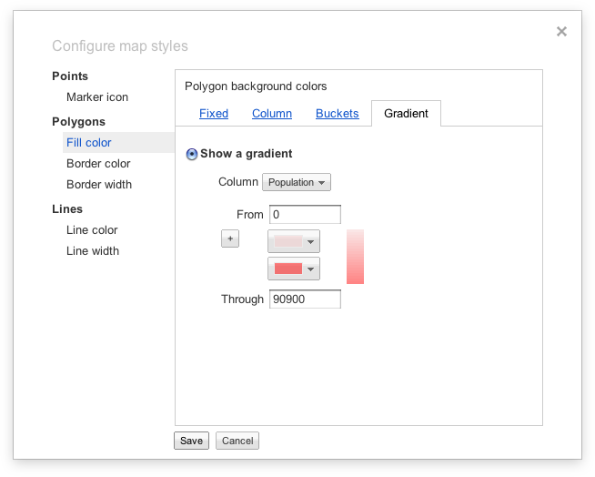

Fusion Tables is a modern data management web application making it easy to host, manage, collaborate on, visualize, and publish data tables online. Follow the steps below to upload your own data to Fusion Tables and create a map!
Go to Fusion Tables
Select New table > Import table

Click Choose File

Browse to find the population.csv file.
Click Next
Click Next again
Update the Table name to Bay Area Population. Add any attribution data and/or change the description.

Click Finish
The file will upload to Fusion Tables. Here's an example of what the table will look like in Fusion Tables
Now that you have the Bay Area population data in Fusion Tables, we're going to merge with a table containing the zip code boundaries.
Make sure you have the Population table open in your browser
Click the Merge tab in the navigation
Paste the following URL in the Text box under Merge with: http://www.google.com/fusiontables/DataSource?dsrcid=702655
Click the Get button
Select the columns you want to merge on. Make sure the radio button next to Zip is selected in the left column, and select the radio button next to name in the right column.
Enter a table name for your merged table in the text box next to Save as a new table named. Suggested name: Bay Area Population merged with KML.

Click Merge tables.
Select Visualize > Map
Click on one of the polygons on the map to see what is displayed in the InfoWindow.
Now let's customize the content in the InfoWindow.
Click on Configure info window.
Deselect all checkboxes except for the 2 next to Zip and Population. Notice how the HTML in the right panel is updated as you do this.
Select the Custom tab.

Update the HTML to the following:
<div class='googft-info-window' style='font-family: sans-serif'>
<b>{Zip}</b><br>
<b>Population:<b> {Population}
</div>
Click Save.
Click on one of the zip code boundaries. The InfoWindow content should be similar to the following:
94403
Population: 37919
Now add some styling to the map to create an interesting visualization of the data.
Click Configure styles.
Select Fill color under Polygons in the left column.
Select the Gradient tab.
Select the radio button next to Show a gradient.
In the drop-down menu next to Column, select Population.
In the text box next to Through, enter the number 90900.

Select any colors you want in the drop-down menus or keep the default.
Click Save when done.
The map will be updated with the new style.
New tables are automatically set to Private. The visibility needs to be changed to Unlisted or Public to embed in a web page.
Click the Share button in the top right corner.
Select the radio button next to Unlisted or Public. The visibility will be updated immediately on selection.

Close the window.
Now that you have a nice, styled map, it's time to display it into a webpage.
Selecting File > About. The Table ID is the value next to ID.
Open the map.html file using a Text Editor. This file is in the zip file you downloaded at the beginning of this tutorial.
Find the line that reads:
var tableId = XXXXXX;
Replace the XXXXXX with your Table ID.
Review the code. The code creates a new Map and a FusionTablesLayer to display on the Map.
Save your updates.
Open the map.html file in a browser. You should see your Fusion Table data on the map.

Now, update the query sent to the Fusion Table Layer to include a filter. Tip: Use a query to narrow down results (Advanced: allow the user to dynamically change the query)
View the HTML page in a browser again to see the map with the new filter.
This next section is for you to figure out :) A good place to get help will be in the documentation
Add a spatial clause to the query. For example, a distance query. (Advanced: allow the user to dynamically change the query - for example, dragging a Marker to change the center point)
Suppress info windows, and add your own click handler. Display information from the returned row in an info window or other info box on the page.
Set the style of the FusionTablesLayer to color the population polygons red.
Change the style so that areas with a population over 15000 are green (Advanced: allow the user to dynamically change the colors and opacity)
Here are a couple useful tools that will help you work with Fusion Tables:
Shape Escape.
Shape Escape allows you to upload shape files to Fusion Tables. Simply go to shpescape.com and select
the zipped shape file you want to upload. Shape Escape creates a Fusion Table with the shape file
data for you!
FusionTablesLayer Builder
Going a few steps beyond the built-in "Get embeddable code" feature, FusionTablesLayer Builder
generates all the code necessary to include a Google Map with a Fusion Table Layer on your own
website.